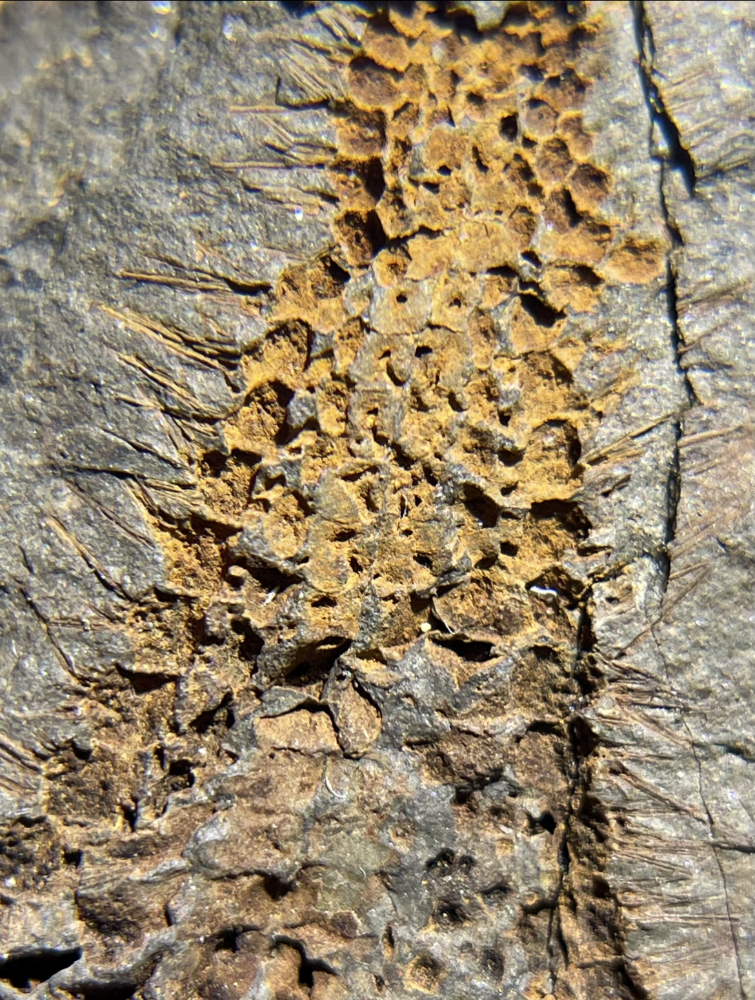
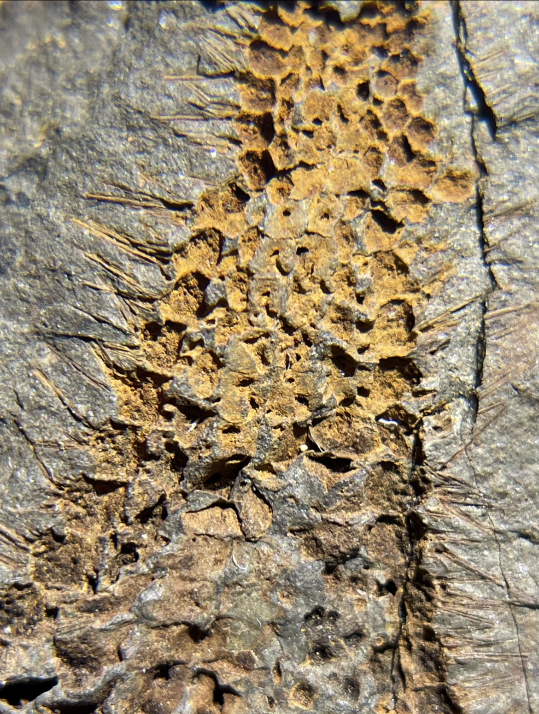

Asteroid
Promopaleaster pricei
• Ordovician
• Martinsburg Formation
• Swatara Gap, Pennsylvania, USA
Size: 4.5 across the arms
This is a beautiful starfish from the famed Martinsburg Formation of Swatara Gap. According to Steve Hess, a long time collector of this locality, "P. pricei" is one of the rarest starfish and rarest fossils period from Swatara Gap, with only a handful of examples known including this one. I believe the "spines" around the arms of this specimen are the remarkably-preserved tube feet.
Addendum: According to Dean Ruocco, this species was named after the late Dr. Price of the North Museum of Nature and Science in Pennsylvania, USA. This specimen was collected by John Coolidge, and its counterpart resides in the Yale Peabody Museum.
 
